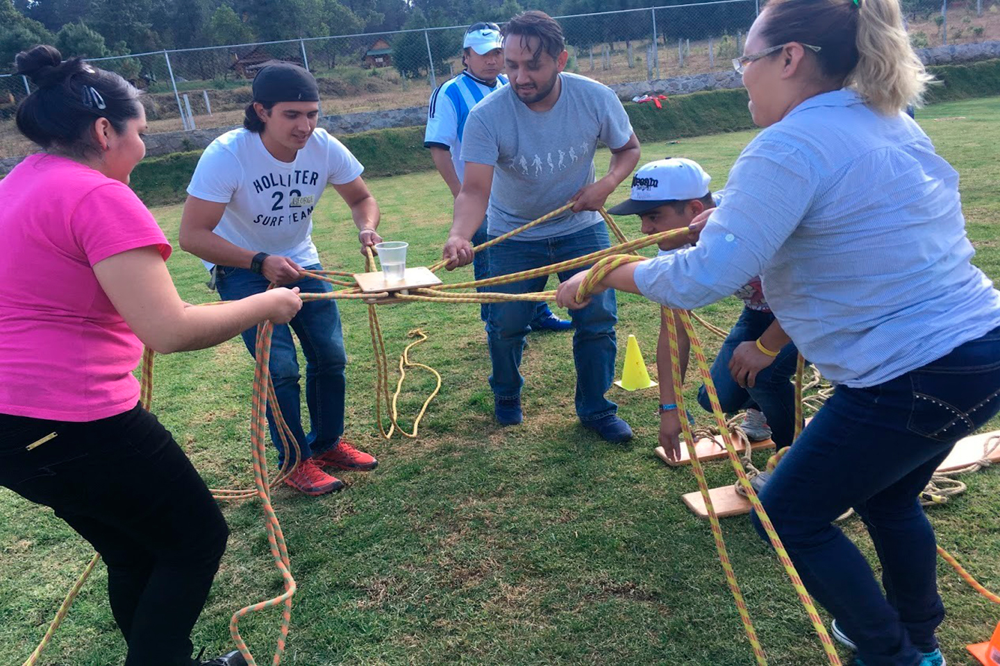

El Camino del Vaso
Detalles de la actividad
- Tipo de actividad: Rompehielos colaborativo enfocado en el trabajo en equipo y la confianza mutua.
- Duración: 15-20 minutos.
- Participantes: De 6 a 20 personas (puede adaptarse dividiendo el grupo en equipos).
- Modalidad: En equipos pequeños de 3 a 5 integrantes.
- Materiales requeridos:
Un vaso de plástico por equipo,
Cinta adhesiva (opcional para ajustar los utensilios)
Cucharas, palos largos o algo para llevarlo (uno por participante)
Instrucciones
- Preparación:Divide a los participantes en equipos pequeños, Cada equipo recibe un vaso lleno hasta la mitad y un utensilio (cucharas, palos largos, etc.) por participante.
- Introducción:El objetivo es transportar el vaso de agua de un punto A a un punto B utilizando solo los utensilios que tienen, sin tocar el vaso con las manos.
- Desarrollo: Los integrantes deben coordinarse para sostener el vaso con los utensilios, sin derramar el agua, Si el vaso se cae o se derrama demasiada agua, el equipo deberá regresar al punto de inicio y comenzar de nuevo.
- Compartir:Cada equipo reflexiona sobre su estrategia y cómo trabajaron juntos para alcanzar el objetivo.
- Cierre: Reflexiona sobre la importancia del trabajo en equipo y concluye con una oración grupal agradeciendo la oportunidad de crecer juntos.
Cierre espiritual
Reflexiona sobre la importancia de trabajar en equipo, la coordinación y la paciencia.